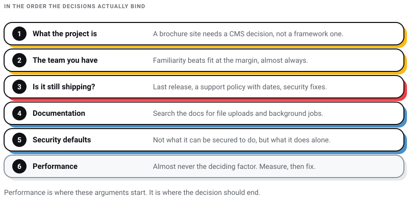
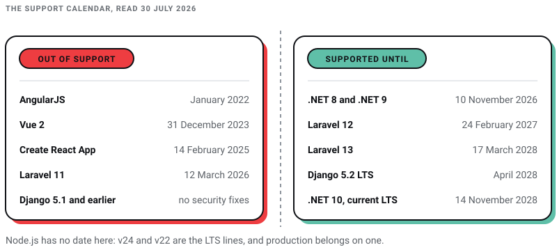

WEB DEVELOPMENT
WEB DEVELOPMENT
AI Website Builders vs Custom Development: Where the Shiny Tools Actually Break
AI website builders are fast, but are they right for your business? Discover where they excel, where they fail, and when custom development is the…

Almost every framework argument I have sat through was about the wrong question. Teams debate rendering models and benchmark charts, and then the project gets handed to somebody else in year two who has to keep it alive with a framework version that stopped receiving security fixes eight months ago.
I run Pixel Street, a web design studio in Salt Lake, Kolkata. We build for brands like Coca-Cola, ITC and Marico, and the framework question comes up in almost every technical scoping call. My answer has become boring and I am going to defend it anyway: pick the thing your team already knows, from the small set that is still actively released, and spend the argument you saved on the data model instead.
Here is why I am comfortable saying that in an article. Writing about frameworks goes stale faster than almost anything else on the web, and it goes stale invisibly: a page recommending a version that stopped receiving security fixes years ago looks exactly like a page recommending a current one. That is the actual risk in this topic, and it is why every version number below was read off the project's own page on 30 July 2026.
A web development framework is a pre-built structure that handles the parts of a website every project needs — routing, templates, data access, form handling, security defaults — so you write the parts that are specific to you. You are not choosing it for speed. Every framework on the shortlist is fast enough for what you are building.
You are choosing it for three things, in this order: who can maintain it after the first developer leaves, whether the project still ships releases, and how well its defaults match the shape of your application. Everything else in this article is detail hanging off those three.
This is the table I wish every one of these articles came with. Usage figures come from Stack Overflow's 2025 Developer Survey technology section, based on 23,678 responses.
| Framework | Language | Current version | Developer usage | Status |
|---|---|---|---|---|
| React | JavaScript | 19.2.8 | 44.7% | Actively released; a library, not a framework |
| Next.js | JavaScript | 16.2.12 | 20.8% | The React framework the React team points new projects at |
| Angular | TypeScript | 22.1.0 | 18.2% | Actively released; docs moved to angular.dev |
| Vue.js | JavaScript | 3.5.40 | 17.6% | Actively released; Vue 2 is end of life |
| Meteor | JavaScript | 3.5.0 | Not listed in the survey | Actively released; small community |
| Express | JavaScript (Node) | 5.2.1 | 19.9% | Actively released; Express 3 deprecated |
| Django | Python | 6.0.7 | 12.6% | Actively released; 5.2 is the current LTS |
| Laravel | PHP | 13 | 8.9% | Actively released; annual majors |
| Ruby on Rails | Ruby | 8.1.3 | 5.9% | Actively released |
| Spring Boot | Java | 4.1.0 | 14.7% | Actively released |
| ASP.NET Core | C# | .NET 10 | 19.7% | .NET 10 is the current LTS |
Two things in that table are worth pausing on. Node.js itself was the single most-used entry in the survey at 48.7%, ahead of React — most "JavaScript framework" conversations are really Node conversations wearing a hat. And jQuery was still at 23.4%, higher than Angular, Vue or Express. Unfashionable is not the same as dead, and a great many working Indian brochure sites are held together by it.
Nothing dramatic happens to a page that recommends a beta from 2016 as its current release. It simply goes on giving bad advice to everybody who trusts it. Three things worth checking against whatever you are reading on this subject, this page included.
vuejs/vue repository is Vue 2, not Vue. Its own README says Vue 2 "has reached End of Life on December 31st, 2023" and directs people to vuejs/core. Similarly, strongloop/express redirects to expressjs/express.None of those breaks anything on its own. Together they are a decent picture of the failure mode: not one dramatic error, but a slow drift where every fact is individually plausible and collectively three to ten years stale. When you evaluate an agency, ask them to date their stack. A team that missed a deprecation notice from a framework's own authors will miss the next one too, and I have made that argument at more length in front-end vs back-end development.
The front end is everything the visitor sees and touches: layout, type, buttons, menus, images, and the JavaScript that responds when they tap something. A front-end framework saves you from manipulating the browser's document model by hand, which is tedious and easy to get wrong.
Source: JavaScript in Plain English
React is the default answer for most interactive work, and it is a library rather than a framework — it renders your interface and leaves routing, data fetching and the build to you. That gap is what Next.js fills, which is why the React team now points new projects at a framework rather than at bare React.
The most useful thing to know here is a deprecation. On 14 February 2025 the React team deprecated Create React App, stating that it "currently has no active maintainers" and recommending you "create new React apps with a framework" or "roll your own custom setup with React using Vite, Parcel or Rsbuild". If a proposal you are reading starts a new React project with Create React App, it was written from memory rather than from the documentation.
Angular is the opinionated, everything-included option: routing, forms, HTTP and testing arrive in the box with one recommended way to do each. That is a real advantage on a large team and an overhead on a five-page site. It uses TypeScript by default. Current version 22.1.0, usage 18.2%.
The catch is the release cadence. Angular ships major versions roughly twice a year, and while upgrades are well tooled, a codebase left alone for three years is a project rather than a ticket.
Vue sits between the two. It is the easiest of the three to add to a page that already exists, and it is the one I would hand a developer who has not used any of them. Current version 3.5.40, usage 17.6%.
One hard fact to carry into any Vue conversation: Vue 2 reached end of life on 31 December 2023 and gets no fixes. Inheriting a Vue 2 codebase is a migration with a budget, not a maintenance item, and anyone quoting you otherwise has not looked.
Meteor bundles the front end, the back end and the build into one system, with real-time data synchronisation as its distinguishing feature, and deploys to its own Galaxy platform. It is on 3.5.0 and is genuinely maintained — Meteor 3 rebuilt it around modern asynchronous Node.
My reservation is about hiring. Meteor does not appear anywhere in Stack Overflow's framework list, which means the pool of people who can pick up your codebase in three years is small. For a real-time application where its model fits exactly, that trade can be worth making. For a marketing site it is a needless dependency on a narrow talent pool.
The back end is the part the visitor never sees: the database, the rules, who is allowed to do what, and every integration. If the front end fails, the site feels bad. If the back end fails, you lose data or take a payment twice.
Django is the strongest default for Python teams and for anything with an administrative interface, because it generates a usable admin from your data model for free. Its own documentation describes it as "reassuringly secure", helping developers "avoid many common security mistakes, such as SQL injection, cross-site scripting, cross-site request forgery and clickjacking", and names Disqus, Instagram, Pinterest, Mozilla and National Geographic among its users.
Current version 6.0.7, usage 12.6%. If you want predictability rather than the newest features, build on the 5.2 LTS, which has extended support to April 2028.
Rails invented most of the conventions the others copied, and it remains the fastest way for a small team to get a database-backed application to a state where real people can use it. Current version 8.1.3, released 24 March 2026. Usage 5.9%, the lowest in the table — which in India in particular means a thinner hiring pool than the framework's quality would suggest.
One claim to leave behind: Rails is still sold on a line from the mid-2000s about building applications at least ten times faster than a standard Java framework. There is no study behind it, no definition of "faster" and no named comparison. Rails really is quick to build in. That particular number is marketing.
Express is deliberately minimal: routing and middleware, and you assemble everything else. That flexibility is why it appears in so many stacks, and it is also why I disagree with the common advice that Express is a good choice for beginners. Minimal means the security decisions are yours to make and yours to forget. Current version 5.2.1, usage 19.9%. Express 3 is marked deprecated.
Whatever you build on Node, the runtime version matters more than the framework version. Per nodejs.org, v26 is the Current release, with v24 "Krypton" and v22 "Jod" on long-term support, and the guidance is explicit: "Production applications should only use Active LTS or Maintenance LTS releases."
Laravel belongs in any shortlist like this one, given how much of the Indian web runs on PHP. It is the batteries-included PHP framework, on version 13 since 17 March 2026, requiring PHP 8.3 as a minimum, with security fixes until 17 March 2028. Usage 8.9%.
If your project is a content site rather than an application, the honest answer may be that you want a CMS and not a framework at all. I have compared those paths in WordPress versus a PHP website and surveyed the options in the best CMS platforms.
A brochure or content site does not need a framework decision at all; it needs a CMS decision. A site with a handful of interactive pieces wants the lightest thing that does the job. A genuine application — a booking engine, a dealer portal, anything with accounts and permissions — is where this choice starts to matter, and there the back-end framework decides more than the front-end one.
Ask yourself plainly: is it a small blog or a large e-commerce build, does it need heavy interactivity, will it hold a lot of data, and what are your budget and timeline? Those four answers eliminate most of the shortlist before anyone opens a benchmark.
This is the criterion that outranks every other one and it is the one people skip because it feels like a compromise. A team that is good at Django will ship a better Django application than a marginally better-suited framework they are learning on your budget. Familiarity beats fit at the margin, almost always.
If you are hiring rather than deploying an existing team, the survey percentages above are a rough proxy for how easy someone will be to replace. React, Node, ASP.NET Core and Angular are the deepest pools.
Three questions, and all three are answerable in five minutes from the project's own site: when was the last release, is there a published support policy with dates, and does the version you are about to build on still receive security fixes? A framework that fails any of those is disqualified regardless of how good it is.
Everyone says to check the documentation. Here is a sharper version: search for the two most boring things your project needs — file uploads and background jobs, say — and see whether the official docs answer them, or whether every result is a blog post from 2019. Official answers mean the project cares about the unglamorous path you are about to walk.
What matters is not whether a framework can be secured but what it does when nobody is paying attention. Django escapes template output and ships CSRF protection on by default. Express gives you almost nothing until you add it. Neither is wrong; they are different amounts of homework, and you should know which one you have signed up for. Either way, no framework's defaults substitute for having the finished build put through vulnerability assessment and penetration testing.
Performance is where these conversations love to start and it is almost never the deciding factor. For the overwhelming majority of sites, what makes pages slow is image weight, too much JavaScript, render-blocking fonts and where the server sits — none of which is a framework property. Choose on maintainability and fix performance with measurement.

These dates decide more real projects than any feature comparison, so here they are in one place, each from the vendor's own page.

Which web development framework is best in 2026?
There is no single answer, and any article giving you one is selling something. The defensible version: React with Next.js for interactive front ends, Django or Laravel for data-backed applications depending on whether your team writes Python or PHP, and a CMS rather than a framework if the site is mostly content. Then override all of that with whatever your team already knows well.
Is Angular dead?
No, and the confusion is a naming problem. AngularJS — the original, from 2010 — lost support in January 2022. Angular, the rewrite, is on version 22.1.0 and is used by 18.2% of developers in Stack Overflow's 2025 survey. They are different frameworks that share a name.
Should I still use Create React App to start a project?
No. The React team deprecated it on 14 February 2025 and said it has no active maintainers. Use a framework such as Next.js, or a build tool such as Vite, which is on 8.2.0.
Do I need a framework at all?
For a marketing site, often not — you need a CMS, a good template and someone who understands performance. Frameworks earn their cost when the site has state: accounts, permissions, transactions, a data model that changes. Adding one to a brochure site adds a build pipeline and a dependency tree to something that needed neither.
What does the framework choice do to the budget?
Less than clients expect at the build stage and more than they expect afterwards. The expensive decisions are the data model and the integrations. Where the framework choice shows up is year three, in whether you can hire someone to maintain it at a sane rate. I have broken down the cost side in what a website actually costs in Kolkata.
The framework you choose matters considerably less than the discipline of choosing it deliberately and then keeping it current. Every one of the projects in the table above is fast enough, secure enough and capable enough to build almost anything a business commissions. What separates them in practice is who you can hire, how loudly the project announces its breaking changes, and whether anybody on your side is reading those announcements.
Pick from what is still shipping. Write down the version and the support end date on the day you launch. Put a reminder in the calendar six months before it. That single habit prevents more expensive rebuilds than any architecture decision I have ever argued about.
If you would rather someone else held that calendar, we design and build from Kolkata as a development team, and we will tell you when the honest answer is a CMS rather than a framework.
10 min read 40 cited sources WEB DEVELOPMENT
Author
Khurshid Alam is the founder of Pixel Street, an AI-native design & development studio. Design thinking on weekdays and spreadsheets on weekends.
He writes about growth, design, and AI, mostly because someone has to say the quiet parts out loud.
WEB DEVELOPMENT
AI website builders are fast, but are they right for your business? Discover where they excel, where they fail, and when custom development is the…
 Digital Marketing
Digital Marketing
Learn about AEO vs GEO vs SEO. Discover what changed with AI search, what still matters, and how to optimize for Google AI Overviews, ChatGPT, and…
 Digital Marketing
Digital Marketing
Want ChatGPT to recommend your brand? Learn how AI chooses businesses, where citations come from, and practical ways to increase your visibility.
 Web Design
Web Design
A client asked me this on a call last month: “Khurshid, everyone just asks ChatGPT now. Do we even need a website anymore?” He runs a business doing…


{kind=link}